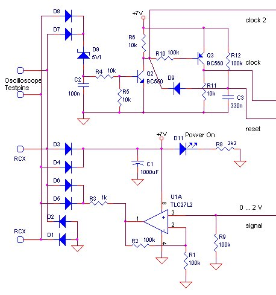
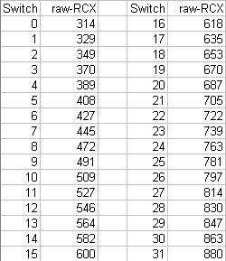

Robbert
Mattijs
multiplexer overview
Stef Mientki
april 2001
Time Multiplexing
Amplitude Multiplexing
Pulse Detection
Status LEDs
Programming
What doesn't work
| Lego-Knex
Robbert Mattijs multiplexer overview |
Mindstorms Universal Control Box
Stef Mientki april 2001 |
Features
Time Multiplexing Amplitude Multiplexing Pulse Detection Status LEDs Programming What doesn't work |
|
uses both time and amplitude multiplexing |
|
Features
So we intended the potmeters to control the 3 motors, forward / backward and power control. Three of the switches were intended as motor float switches. The function of the other switches have no fixed meaning, neither have the status LEDs. The spare analog inputs are meant to test new sensors. The RCXcc program (NQC) can be downloaded here. All measurements were done with
|
|
| Principle
of time multiplexing Time multiplexing is done by a cheap 1 to 8 analog mux (4051) and a 4 bits counter (4520). The counter is controled by 2 signals, the clock-signal and the reset-signal. Both these signals are generated by the RCX by going into touch-sensor mode for a short period of time. By using different time periods, you can create distinguishable signals. |
|
| On the right a simulation (close resemblance
to oscilloscope measurements) of pulses
The "measurement pulse" is generated by the RCX for the measurement of the light sensor. An instruction to go into touch-sensor mode, followed directly by an instruction to go back into light-sensor mode, will give a passive (10 kOhm pulled-up to + 5V) pulse of 6 msec. This will be detected by the cirquit as a clock pulse for the counter. Giving an instructions to go into touch mode, wait for 20 msec, followed by an instruction to back into light-sensor mode, will give a passive sensor input of 20 msec. This pulse will be detected as a counter reset.
|
|
Power
Supply + pulse detection 
| Power
is derived in the classical way by 4 diodes (D1..D4) and a capacitor C1.
Because relative large periods (40 msec) the sensor will be switched to
touch-sensor and due to the experimental usage of this cirquit, a large
capacitor is needed. Because I had space enough, I even used 1000 uF, which
is well overdone in most cases.
The clock pulse is derived with a simple RC-network R4,C2) and separate diodes (D7,D8). Special thanks to Nitin Patil, who suggested to use a zenerdiode. Not using a zener diode, R4 should be about 1 kOhm (and C2 should be 1 uF), to get the amplitude low enough, which will lead to a needless energy consumption. For the status LEDs we needed an inverted clock pulse. Therefor we used the 2 transistors Q2 and Q3 to get the 2 different clock-pulses. When the transistor Q2 starts to go in the off-state, resistor R5 ensures that capacitor C2 will be full decharged and the transistor will really go in the off-state, generating a positive pulse on his collector. This RC-network will suppress the light measuring pulses and will detect a touch-sensor mode pulse longer than 1 msec. The reset pulse is derived with D9,R12 and C3, while will supress touch-sensor pulses shorter than 10 msec. Signal generation
is done by a voltage drive, implemented by U1A and R3. The resistor R3
is made as low as possible to get the most linearity from a voltage drive.
A good linearity is required to realize the amplitude multi-plexing up
to 5 switches. A current drive is in this cirquit not possible, see notes
below.
|
 |
Time
Multiplexing and Status LEDs 
The clock pulses are counted with a binairy
counter (4520) and the lower 3 bits of the counter directly control the
analog multiplexer (4051), which will connect one of the IO-pins
(X0..X7) to the common-IO-pin (X).
Status
LEDs
Because a 4 bit counter (half of the 4520)
was left unused, we've tried to give it a useful destination. With a transistor
and some diodes we managed to create a status led multiplexer. The principle
is as follows:
The LED's are connected to the outputs
of the 4-bit binairy counter U3B, which merely has a memory function (flip-flop).
Normally the counter U3A will only count from 0 to maximal 7 (to
measure all eight analog signals) and thus leaving the status of the LED's
unchanged (because counter U3B is disabled by the MSB of U3A, counter values
8..15).
If now still more clock pulses is generated,
first U3B will be reset by the counter value 8 / 1000 on the outputs of
U3A. On every next clock pulses, the counter U3B will advance one step.
Because we needed countvalue 8 for other
purposes only three LEDs can be used in this design.
This is a nice example of using a sensor input as an multiplexed actuator output, which can be used in general as long as the actuators are using not too much current.
Amplitude
Multiplexing 
As can be seen in the schematic below,
the potmeters (placed between ground and Vref) can be connected directly
to input of the multiplexer, whereby the linearity is only determined by
the voltage-drive cirquit.
Analog signals in the range of 0.. 2 Volt also can be directly tied to an input of the multiplexer.
Amplitude-multiplexing upto 5 switches requires a current source, to get a very linear respons, which is necessairy to detect the individual switches. First a stable voltage (in respect to the unstable +7 Volt) is derived with D98,D99,C99 and R99. Then transistor Q100 and resistors R101 ... R105 will generate a stable current through R100, resulting in the voltage to be measured. The generated current is (for switches that are in the on-state, otherwise zero) linear depending on
(1/R101) + (1/102) + ... (1/105) = (1/2)+(1/4)+..+(1/32)resulting in equally spaced amplitude intervals for every binairy step. The resistors can be normally 5% types, but some values (specially the large values) must be made up from 2 resistors, see table below, to get enough accuracy. To fully use the range of the RCX, R9 (see schematic above) is placed in parallel with R100.
| Measurements from switch encoder
 |
|
| Combining resistors
to get the good values R101 = 22k
|
|
Programming 
The complete NQC-programm (also containing
comment and several test tasks) can be downloaded here.
Here only the basic principles are shown.
| Generating the reset pulse | SetSensor(_S,SENSOR_LIGHT);
SetSensor(_S,SENSOR_TOUCH); Wait(4); SetSensor(_S,SENSOR_LIGHT); |
| Reading a signal | SetSensorMode(_S,SENSOR_MODE_RAW);
x=_S; |
| Generating the clock
pulse,
for the next signal or LED |
SetSensor(_S,SENSOR_LIGHT);
SetSensor(_S,SENSOR_TOUCH); SetSensor(_S,SENSOR_LIGHT); |
| Encoding
the switches
because it will almost linear we can use a formula in the case of 4 switches |
x=(X4-300)*15/550 |
| Setting the status
LEDs
(after reading all analog signals) |
repeat (LED_VALUE)
{ SetSensor(_S,SENSOR_TOUCH); SetSensor(_S,SENSOR_LIGHT); } |